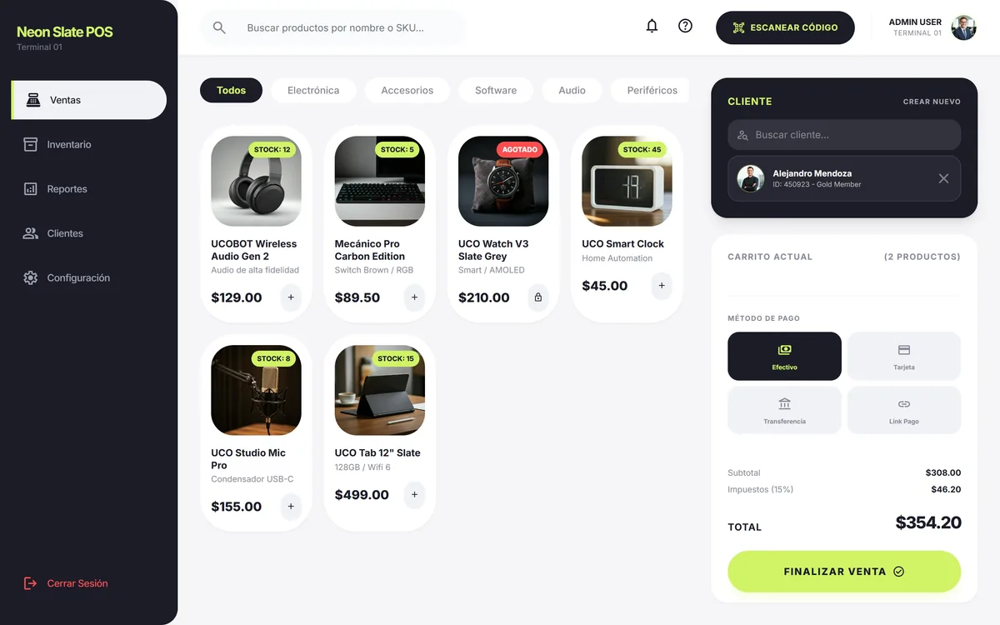
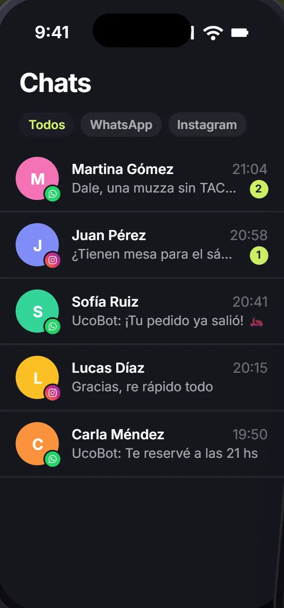
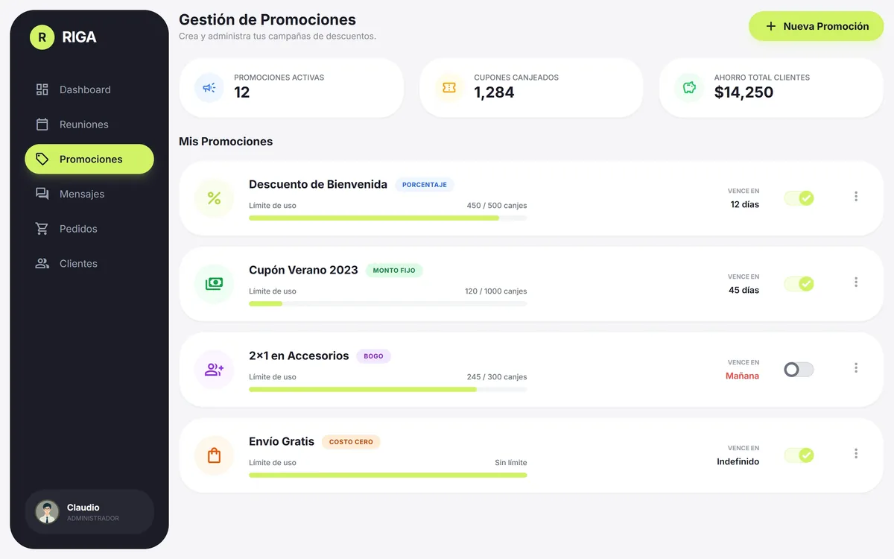

B2B SaaS
UcoBot
From a chat message to an order, a booking or a follow-up, for people who have never configured a bot.





Project overview
- Industry
- SaaS for food, retail and services
- Product
- AI chatbots, CRM and operations: web panel, Windows and Android apps
- My role
- UX/UI design
- Responsibilities
- Experience for contacts, follow-ups and sales; dashboards and interface patterns
- Team
- A Codea Desarrollos product
- Tools
- Figma
- Status
- Live. Public site, API documentation and desktop and Android apps (version 1.2.5, October 2026)
Screens are the previews published on UcoBot’s public site, with sample data and sample business names. The commercial figures on that site are not used in this case.
In one minute
Problem
Small businesses sell through WhatsApp and Instagram. Managing customers by hand means missed messages, forgotten follow-ups and lost sales.
Approach
I designed an experience that centralizes contacts, automates follow-ups and streamlines the sales process, expressing a technical platform in verbs the team already uses: reply, confirm, charge, remind.
Outcome
A live product where six modules share one visual language, from AI chat to point of sale, and are configured from a panel without writing code.
01The challenge
Powerful technology for people with no time to learn it.
Behind one answered message there is a language model, two Meta APIs, a catalog, an agenda, a cash register and a thermal printer. Whoever runs the business should see none of that.
The product lives in three contexts that share data but not attention. Each one needs a different amount of interface.
| Context | Who | What matters | Where |
|---|---|---|---|
| The chat | The business’s customer | A quick, human answer and a clear confirmation | WhatsApp, Instagram |
| The panel | Whoever runs the business | Knowing what needs attention, configuring once | Web |
| The counter | Whoever takes orders and charges | Speed, stock and printing without dialogs | Windows, Android |
02Research & discovery
The platform’s limits are part of the experience.
In a messaging product, the costly failure is a channel rule that surprises someone in the middle of a sale.
Reading the public API documentation as a designer turns technical errors into situations someone has to understand at the counter.
| Platform rule | API code | Design implication |
|---|---|---|
| After 24 hours without a message from the contact, free replies close | outside_24h_window | Show how long the window stays open before someone writes, not after the send fails |
| A number or account can be disconnected | channel_not_connected | Connection state visible in the inbox, with one action to reconnect |
| Meta can reject a message | channel_error | The message stays in the thread with its state and a retry |
| UcoBot’s AI answers, or the business’s own software does | ai_mode | Always say who is answering: the bot or a person |
Evidence
What was known
- Customer management was manual and opportunities were being lost
- Business owners configure from a panel, without code
- Channel rules above, from the public documentation
Assumptions
What was designed as a hypothesis
- People think in customers and orders, not in bots and flows
- Seeing who is answering builds trust in automation
Still open
What real use has to confirm
- Usability during a real shift, with the counter full
- How each business sector names the same concepts
03User journeys & flows
One message, three possible outcomes.
Entry
The customer writesWhatsApp, InstagramFirst reply
The AI answersWith the business’s catalog and toneIntent
OrderBookingNeeds a personIn the panel
Order card, then registerAgenda: pending or confirmedHandoff, with the whole historyResult
Kitchen ticket printedAutomatic reminderConversation answered
Information architecture
Six modules, one shared object: the customer. Each module answers a single question.
| Module | Question it answers | Main action |
|---|---|---|
| AI chatbots | Who is answering on each channel? | Turn on, pause |
| Automations | What happens without anyone doing it? | Define a trigger |
| Bookings | Who is coming and who still has to confirm? | Confirm, reschedule |
| Point of sale | What is being sold right now? | Charge |
| Promotions | Which offers are running and until when? | Create, pause |
| Analytics | What needs attention today? | Open the detail |
04Design exploration
From technical concept to everyday sentence.
The pattern that simplifies the most is verbal: each technical concept is translated into the words of whoever uses it.
| Technical concept | In the interface | Why |
|---|---|---|
| Scheduled trigger | “24 h before the appointment” | It reads as a sentence, not as a rule |
| Inactivity event | “No purchase after 2 h” | Names what the business notices |
| Flow enabled or disabled | A switch on each row | State and action in the same place |
| Stock constraint | “Sold out” and a locked button | It prevents the error instead of explaining it |


05Design system
A dark frame, a light workspace and one color for action.
The palette reaches the product as semantic tokens (primary, sidebar, muted, destructive, ring), so a color change is one value and not a search through screens.
Color
- Lime · action
#D1F366 - Ink · frame
#1C1C28 - Workspace
#F9FAFB - Text, secondary
#64748B - Confirmed
#22C55E - Information
#3B82F6 - Pending
#F97316
Contrast audit
| Pair | Sample | Ratio | Result |
|---|---|---|---|
| Ink on lime (buttons) | 13.42:1 | AAA | |
| Lime on ink (menu) | 13.42:1 | AAA | |
| Secondary text on white | 4.76:1 | AA | |
| Light gray labels on white | 2.54:1 | Not for text Replace with secondary text | |
| Lime on white | 1.26:1 | Not for text Only as a background |
Reusable patterns
- Metric card: icon, change, value and one sentence that says what to do with it
- Row with state: name, context, written state and the action on the right
- Order card inside the chat: item, total and state in one block
- One type family (Inter) and generous radii that separate modules without borders
06Final solution
The same grammar in every module.



One inbox WhatsApp and Instagram together, with the channel on each contact. 
The order, inside the chat It says who is answering and closes with a summary that can be checked.
07Implementation & collaboration
Designing inside a product that other people build.
UcoBot is developed by Codea Desarrollos. My contribution is the experience and interface; engineering, AI and infrastructure belong to the team.
- The public product runs on Next.js, with the palette implemented as CSS variables
- Desktop and Android apps bring the panel to the register and print without opening a dialog
- Knowing React, CSS and REST APIs lets me discuss states, limits and cost before drawing the screen
08Outcomes & impact
What the product lets someone do today.
- 6modules with one visual language
- 2messaging channels in one inbox
- 0lines of code to configure a bot
- 3platforms: web, Windows and Android
Adoption and conversion figures aren’t part of this case: they belong to the business and I can’t audit them.
09Learnings & next steps
In SaaS, the states are the product.
Learnings
- Automation is trusted when it says what it is doing and how to stop it
- A bright brand color needs a rule: in UcoBot, lime works as a background and not as text
- Naming is interface: the right verb saves a tutorial
Next steps
- Test the register with whoever uses it, during a real shift
- Replace light gray labels and lime text on white
- Design the empty and first-day state of each module